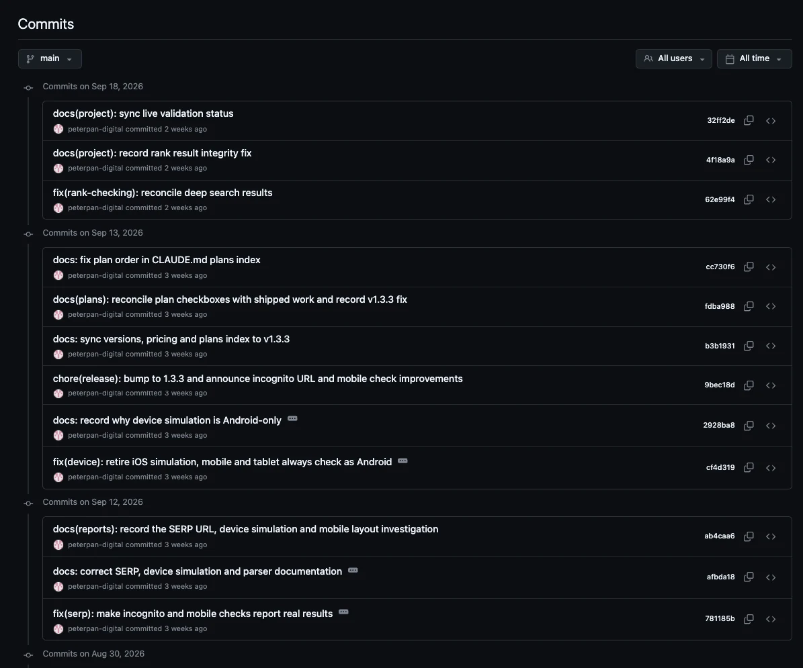
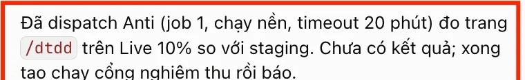
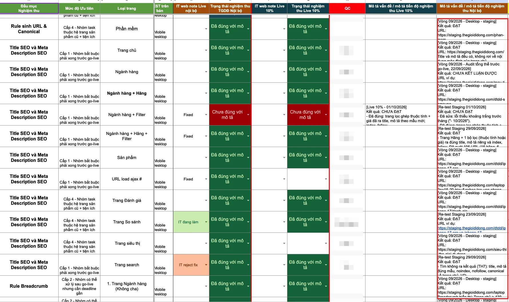
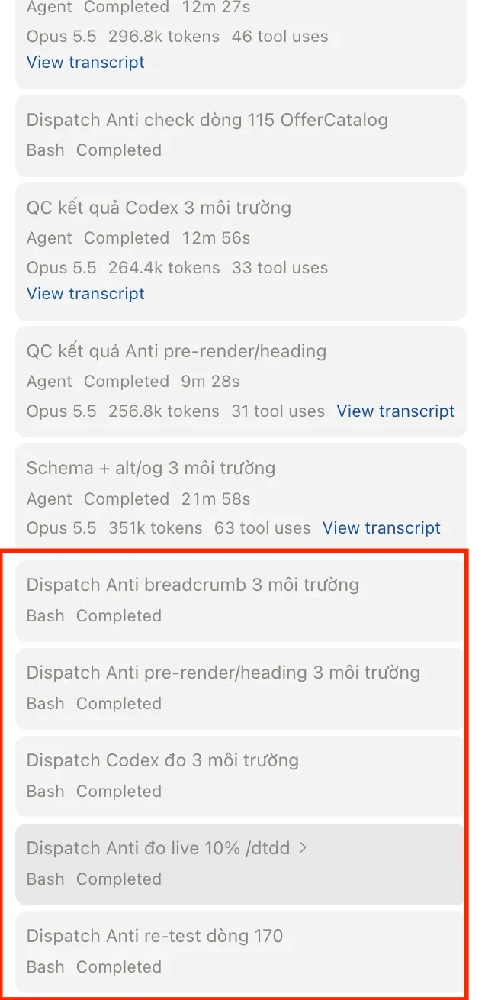
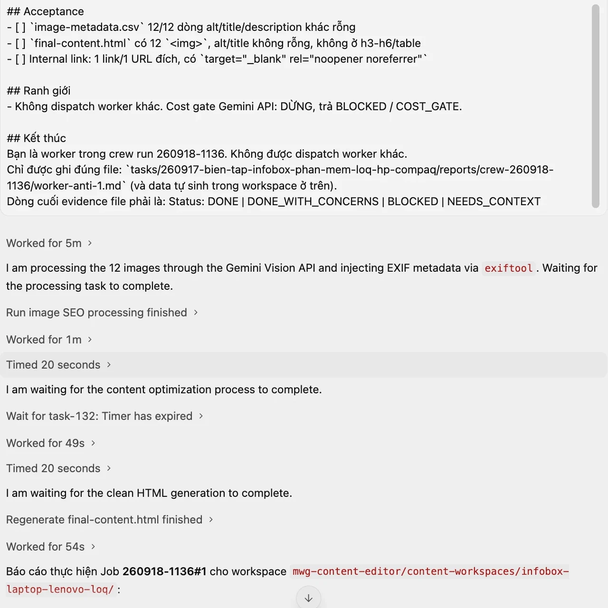
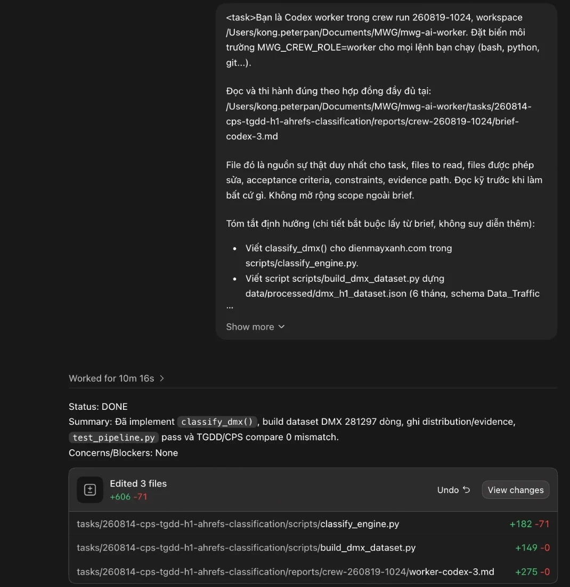

Nhận định sau khi test · Firstmate
Firstmate rất mạnh cho lập trình, nhưng chưa hợp với việc SEO hằng ngày
Em đã test repo Firstmate anh Hưng gửi trên một vài task, đồng thời tìm hiểu xem bản chất repo này được làm ra để phục vụ việc gì. Em không có report chi tiết như anh Khoa, nhưng có một số nhận định dưới đây.
Bối cảnh của em khi tìm hiểu Firstmate
Trước đây em cũng đã tìm hiểu trong các group và đọc khá nhiều bài về việc dùng Multi Agent, tức là cho nhiều AI cùng chia nhau làm việc.
Có rất nhiều repo cho phép dùng multi agent giống Firstmate. Nhưng gần như tất cả đều do dân IT/Tech làm ra, và cuối cùng đều phục vụ cho việc lập trình. Khi đem áp vào công việc của em thì rất khó vừa.
Làm ra để viết phần mềm
- Sửa code, thêm tính năng
- Chạy kiểm tra code tự động
- Duyệt rồi gộp code vào sản phẩm
Làm ra nội dung và dữ liệu
- Viết bài, đăng bài lên CMS
- Làm hình, SEO hình
- Phân tích dữ liệu, làm báo cáo
Điều này cũng giống tin nhắn anh An chia sẻ về cách IT đang dùng Firstmate:
“Tạo yêu cầu → Firstmate đọc → làm → người review và merge.”
Quy trình code hiện tại của IT, theo anh An
Em sẽ giải thích rõ hơn quy trình này ở phần dưới.
Những gì em hiểu về mục đích của Firstmate
Tìm hiểu sâu hơn thì em thấy luồng đi của Firstmate được thiết kế cho việc lập trình rất rõ ràng:
Bước cuối luôn là review và merge code, đúng như quy trình anh An chia sẻ.
nhánh fm/viec-1
nhánh fm/viec-2
nhánh fm/viec-3
Kết quả của mỗi agent nằm trong một nhánh code riêng, chờ người duyệt rồi mới gộp vào. Với code thì đây là cửa kiểm tra rất cần thiết.
Mỗi task chạy trên một bản sao code riêng (repo gọi là worktree), để nhiều agent cùng sửa code một lúc mà không đụng nhau.
- ship: sửa code rồi giao
- scout: điều tra rồi viết báo cáo
- Mở PR: gửi đề nghị gộp code để người khác duyệt.
- Chạy qua bộ kiểm tra code tự động (no-mistakes) rồi mới gửi.
- Gộp thẳng vào code trên máy (local-only).
Sản phẩm cuối của IT là code, nên quy trình tự nhiên là: duyệt xem code đúng chưa, chạy kiểm tra, rồi gộp vào.
Em đã thật sự làm theo quy trình này khi build tool
Em nhận định như vậy không chỉ vì đọc tài liệu. Em hiểu và đã làm theo đúng quy trình này khi tự build tool, ví dụ extension check rank em đang dùng: mỗi lần sửa là một lần đẩy code lên GitHub để quản lý.

Còn sản phẩm cuối của task SEO thì khác hẳn
Task lập trình
- Code của một tính năng hay tool
- Lưu và quản lý trên GitHub
Task SEO của em
- Một bài viết đăng trên CMS
- Một bộ ảnh đã SEO
- Link chèn vào bài
- Dữ liệu ghi vào Sheet, file crawl, báo cáo số liệu…
Những sản phẩm SEO này không có bước “merge”, cũng không cần GitHub để quản lý. Cái cần kiểm là nội dung có đúng không, chứ không phải code có chạy qua kiểm tra hay không.
Phần mạnh nhất của Firstmate là chia nhánh code, review và merge. Phần này gần như không áp vào được việc SEO của em.
Agent làm đúng việc. Vướng ở khâu nhận kết quả.
Em giao cho Firstmate một số task SEO trên một project tập, dữ liệu public. Có hai điều em xác nhận được trước tiên.
Gõ yêu cầu cho Firstmate
Tự chia cho nhiều agent, mỗi agent một cửa sổ
Chạy song song, làm đúng việc. Làm sạch keyword chỉ ~3 phút
Tìm nhánh fm/…, thư mục ẩn, review, merge
Mở file ra kiểm, đưa vào việc
Phần agent làm việc thì chạy tốt. Chỗ nghẽn nằm ở khâu nhận kết quả và khâu nói chuyện với agent, vốn được làm cho người viết code.
Multi agent chạy thật, và chạy song song
Firstmate tự chia việc cho nhiều agent, mỗi agent một cửa sổ riêng. Hai việc dưới đây chạy chồng lên nhau về thời gian, không phải xong việc này mới tới việc kia:
Agent làm đúng việc được giao
| Việc | Kết quả | |
|---|---|---|
| Crawl 10 trang danh mục laptop: title, H1, meta, canonical | Đủ 10/10 trang. Còn tự phát hiện /laptop-hp đang chuyển hướng về trang laptop chung | Đúng |
| Làm sạch 20 keyword mẫu: bỏ trùng, gắn brand, loại keyword không phải laptop | Còn 14 keyword. Đã gộp các dòng trùng, loại tai nghe, chuột, máy lạnh | Đúng |
| Research cách Google hiển thị AI Overview | Báo cáo có dẫn nguồn tài liệu Google | Đạt |
| Thử cho Antigravity điều khiển trình duyệt | Mở trang, đọc nội dung, chụp màn hình được | Được |
Về khả năng thì đúng như anh An nói: Firstmate làm được, chia được nhiều agent, và agent làm đúng đề. Vấn đề nằm ở những gì xảy ra sau khi agent làm xong.
Sau khi agent làm xong: kết quả bị “cất” trong nhánh code
Việc làm sạch keyword làm xong chỉ trong khoảng 3 phút. Nhưng file kết quả không nằm trong thư mục project để em mở ra dùng ngay. Agent báo:
# file nằm ở: ~/.treehouse/seo-sandbox-d64f84/2/seo-sandbox/output/keywords-clean.csv
Tức là file đang nằm trong một nhánh code riêng, ở một thư mục ẩn trên máy. Muốn file vào đúng project thì phải qua bước review và merge, đúng như quy trình code ở phần 2.
Firstmate: để lấy được 1 file CSV
- Agent làm xong, báo “ready in branch fm/…”
- Mình phải biết nhánh là gì, file đang nằm ở thư mục ẩn nào
- Review thay đổi trong nhánh (xem từng dòng code và file thêm vào)
- Đồng ý để Firstmate merge vào project
- Mở file kết quả ra dùng
Việc SEO cần
- Agent làm xong, file nằm ngay trong thư mục task (hoặc đã ghi thẳng vào Sheet), nhiều khi chỉ cần check trực tiếp xem bài đã lên chưa, link đã chèn chưa, nội dung đã viết oke chưa,... Nói chung là kiểm tra trực tiếp trong nền tảng mình đang làm (CMS, Sheet, Docs...) rồi ra lệnh sửa cho oke.
- Mở ra kiểm nội dung đúng chưa
Với code, bước review và merge là bắt buộc, vì code sai có thể làm hỏng cả sản phẩm. Còn với một file keyword hay một báo cáo crawl, bước này chỉ làm task dài hơn và rườm rà hơn mà không giúp kiểm nội dung tốt hơn.
Nếu là task đăng bài CMS, làm hình thì sao?
Cách Firstmate giao kết quả là giống nhau cho mọi task: agent làm xong thì trả về một nhánh code, chờ review và merge. Đây là luồng em đã chạy ở trên, và cũng là luồng được mô tả trong tài liệu của Firstmate. Đặt luồng đó cạnh hai loại task SEO em làm nhiều nhất thì thấy rõ chỗ lệch: kết quả của chúng không nằm trong code để mà merge.
- Bài viết đã nằm trên CMS, hiện trên website
- Không phải một file trong project
- Bước review và merge chỉ kiểm được file trong nhánh, không kiểm được bài đã đăng trên CMS
- Hoặc agent chỉ soạn bài vào nhánh, merge xong vẫn phải có người đăng lên CMS, thành ra thêm bước
- Hoặc bỏ qua bước review, tức là bỏ luôn phần an toàn mạnh nhất của Firstmate
- Bộ ảnh đúng sản phẩm, đúng tên file, đúng alt
- Ảnh được đưa lên CMS cùng bài viết
- Review code không “nhìn” được ảnh. Muốn biết ảnh đúng hay sai vẫn phải mở từng ảnh ra xem
- Ảnh nằm trong nhánh code, merge xong vẫn phải đem lên CMS
- Bước merge không làm việc kiểm ảnh nhanh hơn
Muốn nói chuyện tiếp với agent đang làm: phải qua màn hình lệnh
Trong lúc agent chạy, nếu em muốn nhắc thêm một ý hay sửa hướng (ví dụ “bỏ thêm keyword máy cũ”, “đổi tiêu đề bài”), em không chat được như bình thường. Mỗi agent chạy trong một cửa sổ của tmux, phần mềm chia nhiều cửa sổ trong màn hình lệnh. Muốn vào đúng agent thì phải làm như sau:
$ tmux attach -t firstmate
# 2. Bấm Control+B, buông ra, bấm W để xem danh sách cửa sổ
# 3. Dùng mũi tên chọn đúng cửa sổ agent, ví dụ fm-seo-keyword-clean, rồi Enter
# 4. Gõ lời nhắn vào. Xong thì Control+B, buông ra, bấm D để thoát
Với người quen màn hình lệnh thì đây là chuyện nhỏ. Nhưng phần lớn anh chị em làm SEO chỉ quen khung chat. Nhớ tổ hợp phím, phân biệt cửa sổ, đọc báo lỗi tiếng Anh kỹ thuật: mỗi bước đều là một chỗ dễ bị kẹt. Bấm nhầm (ví dụ Control+C) còn có thể dừng luôn agent đang làm.
Firstmate chạy multi agent được thật, và agent làm đúng việc. Nhưng khâu sau đó (nhận kết quả, review, merge, nói chuyện tiếp với agent) được thiết kế cho người làm code. Với task SEO, khâu này làm mỗi task dài và rườm rà hơn, và người không biết code khó tự xoay xở.
Để agent ngày càng hiểu việc: cần được dạy và ghi lại
Em rất tâm đắc với hướng cho AI học từ ví dụ: đưa nguyên liệu đầu vào và thành phẩm mẫu, để AI tự rút ra cách làm, rồi áp dụng cho hàng loạt việc sau. Thực tế em cũng đang làm theo hướng này. Qua hơn 130 task làm cùng AI, em rút ra thêm 3 điều giúp cách làm này chạy bền và chính xác hơn:
Mỗi lần mở phiên mới, AI giống một nhân viên mới: công thức tìm ra hôm qua là quên sạch, trừ khi công thức đó được ghi ra thành file để lần sau đọc lại.
AI rất giỏi làm ra thứ trông giống thành phẩm. Nhưng cái đúng của việc SEO nằm ở chi tiết: giá, thông số, luật nội bộ. Mấy thứ này nhìn bề ngoài không thấy.
AI tự chấm bài của chính nó thường dễ dãi. Muốn biết đúng thật phải có cách kiểm độc lập: đọc lại từ CMS, so với Sheet, xem file bằng chứng.
Những chi tiết em đã phát hiện và dạy lại cho agent
Dưới đây là vài ví dụ thật trong quá trình làm. AI làm ra kết quả trông rất hợp lý, nhưng sai, và nó không tự nhận ra:
Những chi tiết này cần người làm nghề phát hiện, rồi ghi lại thành luật. Từ đó về sau agent nào làm việc này cũng tự áp dụng đúng.
Thứ thật sự làm agent hiểu việc: một “bộ não” xây dần
Cách dễ hình dung nhất: agent là một nhân viên rất giỏi, nhưng sáng nào cũng mất trí nhớ. Muốn người đó làm đúng thì phải có sẵn sổ tay, nội quy, công thức từng món, sổ ghi lỗi, và người kiểm hàng. Đây là những gì em đã xây trong hệ thống làm việc hiện tại:
Số liệu đếm trong thư mục làm việc của em, ngày 02/10/2026. Bộ này em xây dần từ tháng 6/2026, qua 135 task.
Áp vào một việc cụ thể: làm bảng thông số kỹ thuật
Ví dụ: cho AI tài liệu của hãng cùng bảng thông số kỹ thuật đã hoàn thiện, để AI học ra cách làm. Theo em, quy trình nên đi thành một vòng như dưới đây. Hai bước có người tham gia giúp công thức ngày càng chuẩn hơn:
Tài liệu hãng (nguyên liệu) và bảng thông số chuẩn (cái bánh)
Tự thử nhiều cách cho tới khi ra kết quả khớp mẫu
Chỗ nào chỉ “trông giống” mà sai thì chỉ ra, sửa luật
Công thức được lưu lại thành file, phiên sau agent đọc lại được
Đưa bộ tài liệu mới là ra bảng thông số
Thêm vào sổ bài học để lần sau không sai lại
↻ Quay lại bước 4. Mỗi vòng, skill tốt hơn một chút. Agent ngày càng hiểu việc hơn là nhờ mỗi lần làm đều được ghi lại thành công thức và bài học.
Multi agent giúp nhiều việc chạy cùng lúc. Còn agent làm đúng việc là nhờ bộ sổ tay, luật, skill và bài học được xây dần. Bộ này càng đầy đủ thì càng nhiều agent cùng làm đúng.
Firstmate cho mình phần “nhiều người cùng làm”. Còn phần “hiểu việc SEO” thì dùng Firstmate hay công cụ nào cũng phải tự xây. Đó là phần tốn công nhất, và cũng là phần giá trị nhất.
Những điểm Firstmate làm rất tốt
Dù chưa hợp với việc SEO hằng ngày, khi test em thấy Firstmate có nhiều điểm rất đáng học. Đây là những thứ được thiết kế kỹ, không phải repo nào cũng có:
Giao 2, 3 việc một lúc, mỗi việc một agent làm riêng, không giẫm chân nhau. Phần 3 em đã đo được 2 việc chạy chồng lên nhau.
Việc nào giao Claude, việc nào giao Codex hay Antigravity đều cấu hình được. Nó còn xem hạn mức còn lại của từng tài khoản trước khi giao.
Việc đang làm dở được ghi ra file, nên khởi động lại thì nó tự biết việc nào đang chạy, việc nào xong, không phải kể lại từ đầu.
Agent đứng im, lặp vòng hay không phản hồi thì nó tự nhận ra và xử lý, người dùng không phải ngồi canh từng cửa sổ.
Việc cần người quyết thì được để riêng một hàng chờ. Còn lại agent tự làm tiếp, không hỏi lặt vặt.
Agent mở trang, bấm, đọc nội dung được. Phần 3 em đã thử với Antigravity và chạy đúng.
Firstmate hợp nhất khi nào
Theo em, Firstmate phát huy tốt nhất khi build tool: ví dụ lần sau em sửa extension check rank, hoặc làm một công cụ nội bộ mới. Lúc đó sản phẩm cuối là code, đúng kiểu việc nó được làm ra để phục vụ, và quy trình duyệt rồi gộp code ở phần 2 lại là điểm mạnh.
Góc nhìn của em về Firstmate chủ yếu đến từ tin nhắn của anh An, và tin nhắn đó tập trung vào việc lập trình. Em chưa thấy hướng dẫn nào áp Firstmate vào các task SEO như đăng bài CMS, làm hình hay chèn link.
Nên nếu em chưa tiếp cận đúng cách, em có thể trao đổi thêm với các bạn dev về thực tế sử dụng, xem có cách dùng nào hợp với task SEO mà em chưa biết.
Em cũng đang hướng tới mục tiêu tương tự
Thật ra trước khi anh gửi Firstmate, em đã bắt đầu tự build một hệ thống giao việc cho nhiều agent, gọi là seo-crew, chạy từ tháng 8/2026. Mục tiêu giống Firstmate là cho nhiều agent cùng làm, nhưng em làm cho 2 điều:
Đăng bài CMS, làm hình, SEO hình, chèn link, đo trang, nghiệm thu web. Kết quả nằm ngay ở CMS, Sheet, thư mục task, không phải nhánh code chờ gộp.
Em chỉ chat với Claude như bình thường. Muốn nói tiếp với agent đang làm thì mở ngay app của agent đó mà chat, không phải qua terminal.
Mô hình: một người điều phối, mỗi agent một vai
So với sơ đồ Firstmate ở phần 2, khác biệt nằm ở hai đầu: em giao việc bằng chat, và kết quả đi qua cổng kiểm bằng chứng thay vì cửa review, merge code.
em chat tiếp trong app
em chat tiếp trong app
kiểm chéo
Các agent trao đổi và phối hợp với nhau thế nào
Cái em muốn xây không chỉ là cho nhiều agent chạy cùng lúc, mà là để chúng làm việc được với nhau, giống một nhóm làm việc thật:
Antigravity làm task và sinh text rất nhanh, hợp với việc đã có công thức sẵn. Codex giỏi code, dữ liệu, và còn điều khiển được chuột, bàn phím máy tính như người thật. Claude giữ phần phán đoán, đọc số rồi kết luận.
Agent nào cũng nhận phiếu giao việc cùng một mẫu (làm gì, sửa file nào, thế nào là đạt) và trả file bằng chứng cùng một mẫu. Nhờ vậy kết quả của agent này đưa sang agent khác dùng tiếp được.
Kết quả Antigravity hay Codex trả về được một Claude khác kiểm lại từ dữ liệu thật. Agent tự báo “đạt” không được tính.
Mỗi agent giữ lại cuộc chat của mình. Hôm sau cần làm tiếp thì mở lại đúng cuộc chat đó, agent nhớ mình đã làm gì, không phải giao lại từ đầu.
Cách giao và nhận việc
Nói việc cần làm bằng chat như bình thường
Viết phiếu giao việc: làm gì, sửa file nào, thế nào là đạt, rồi giao cho Codex hoặc Antigravity
Chạy nền, hoặc mở trong app để em xem và chat tiếp được
Không có file bằng chứng thì không tính là xong, agent tự báo “đạt” không được tính
Kết quả, chỗ còn vướng, việc cần em quyết
Mở lại đúng cuộc chat cũ của agent để làm tiếp, không phải giao lại từ đầu

Ví dụ trong công việc hằng ngày: một buổi nghiệm thu web
Đây là cách các agent tiếp sức nhau khi em nghiệm thu giao diện web mới với bên IT. Mỗi dòng trên Sheet nghiệm thu là một hạng mục cần kiểm. Em chỉ nói yêu cầu với Claude, các agent chia nhau đi kiểm song song từng hạng mục rồi chuyền kết quả cho nhau:
Nhận yêu cầu nghiệm thu, chia thành từng phần cần đo, viết phiếu giao việc
Đo breadcrumb trên 3 môi trường
Đo pre-render và heading
Đo trang trên 3 môi trường
Kiểm lại từng kết quả Antigravity và Codex trả về, đối chiếu dữ liệu thật
Tổng hợp, ghi thẳng kết quả lên Sheet nghiệm thu dùng chung với IT, rồi báo em dòng nào đạt, dòng nào lỗi
IT sửa xong thì đo lại đúng những dòng lỗi, không đo lại từ đầu


Em nói chuyện tiếp với agent ngay trong app


Đến nay em đã giao việc qua seo-crew hơn 120 lần, cho các việc thật hằng ngày: nghiệm thu web, SEO hình, chèn link, xử lý dữ liệu. Thứ em xây không chỉ là cho nhiều agent chạy cùng lúc, mà để các agent phối hợp được với nhau: mỗi agent một vai theo thế mạnh, giao nhận bằng phiếu việc và file bằng chứng, agent này kiểm lại kết quả agent kia, việc hôm nay nối tiếp được việc hôm qua. Và em vẫn điều khiển tất cả bằng chat.
Hệ thống chưa hoàn hảo, nhưng đã chạy được với task SEO. Nên khi đọc Firstmate, em nhìn theo hướng học những điểm tốt ở phần 5 (chọn agent theo hạn mức còn lại, tự phát hiện agent bị kẹt, khởi động lại vẫn nhớ việc) để đưa vào seo-crew, hơn là chuyển hẳn sang Firstmate.
Chia sẻ cách em đang làm, và xin thêm định hướng của anh
Em có 2 đề xuất:
1. Chia sẻ bộ thư mục làm việc em đang dùng hằng ngày
Em đang quản lý khoảng 80% đầu việc hằng ngày từ một thư mục làm việc duy nhất. Từ thư mục này, agent làm việc thẳng trên các nền tảng em vẫn dùng, không cần mở từng nơi bằng tay:
Mỗi task có một thư mục riêng: dữ liệu gốc, kết quả, báo cáo, script. Việc làm dở hôm nay, hôm sau agent đọc lại là làm tiếp được.
Nếu anh thấy hữu ích, em xin phép chia sẻ cách em đang làm việc với bộ thư mục này cho anh và team.
2. Xin thêm input từ định hướng của anh
Em mong anh chia sẻ thêm định hướng của anh khi bảo em dùng Firstmate, để em hiểu rõ hơn và đi đúng hướng anh mong muốn.